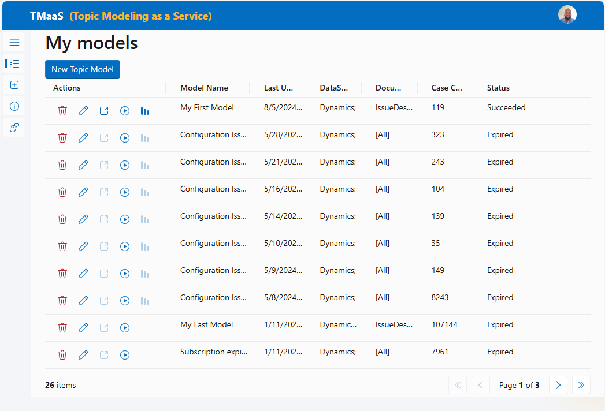
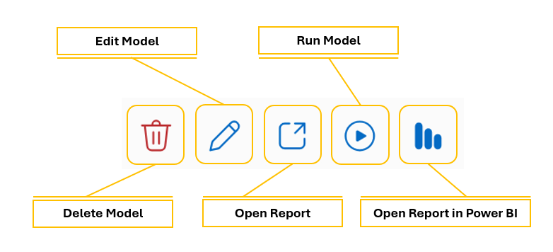

My Models
Using the My Models page you can view and manage your models.

##Icons Know-how

Delete Model: You can delete an existing model.
Edit Model: You can edit existing models.
Open Report: You can open the report in the browser after the model is executed. Reports are available for models with a status of Succeeded.
Run Model: You can execute an existing model. Note the the model is executed with no change in parameters.
Open Report in Power BI: You can open the report in Power BI after the model is executed. Reports are available for models with a status of Succeeded.
Columns Displayed
Actions: The icons discussed above.
Model Name: The name you gave the model.
Last Update: The date and time of the last time the model was saved.
DataSource: The names of the data sets used by the model.
DocumentType: The data subsets and elements used by the model.
Case Count The number of cases used by the model.
Status The current status of the model, either Submitted, Staged, Running, Succeeded, Failed, and Expired.
...back to the TMaaS Homepage